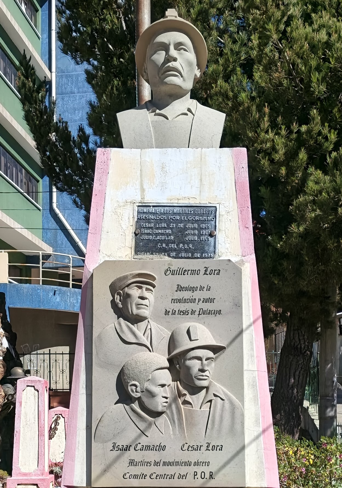

Potosí - Llallagua - Siglo XX
Monumento César, Guillermo
e Isaac

📸 Imagen 1 (Monumento 3D): Elaboración propia / Registro 3D local. Fuente biográfica: Wikipedia / Víctor Montoya, "Isaac Camacho: Crónica de un desaparecido"[cite: 1, 3].
🎙️ Relato histórico y música ambiental:
🎵 Relato basado en la vida sindical de César Lora, Guillermo Lora e Isaac Camacho[cite: 1, 2, 3].